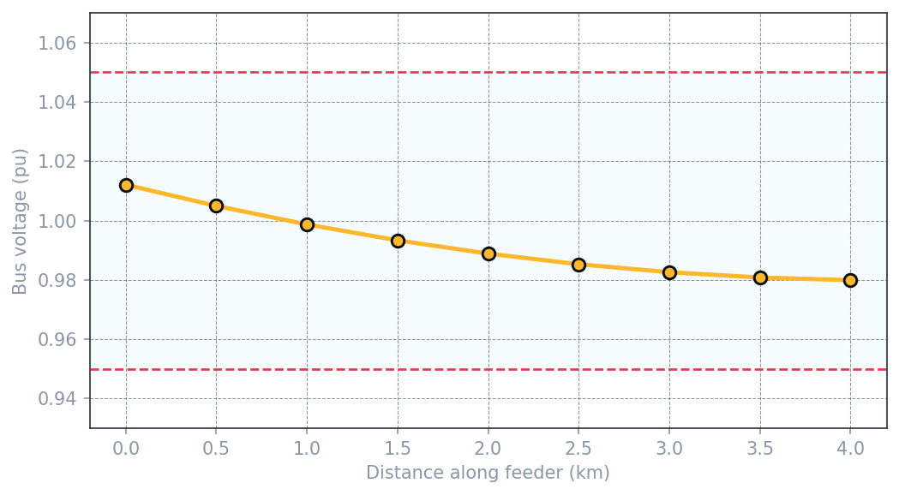
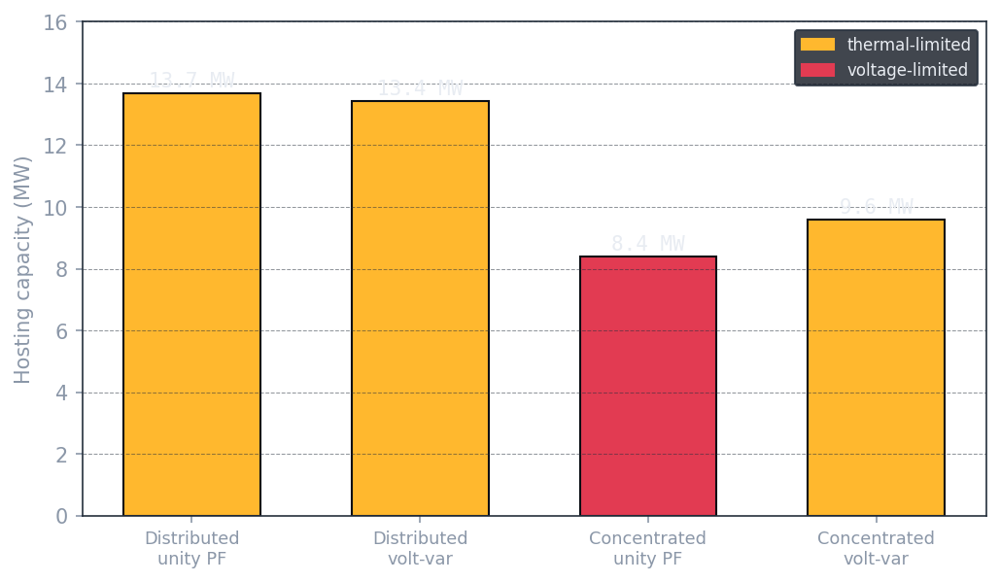
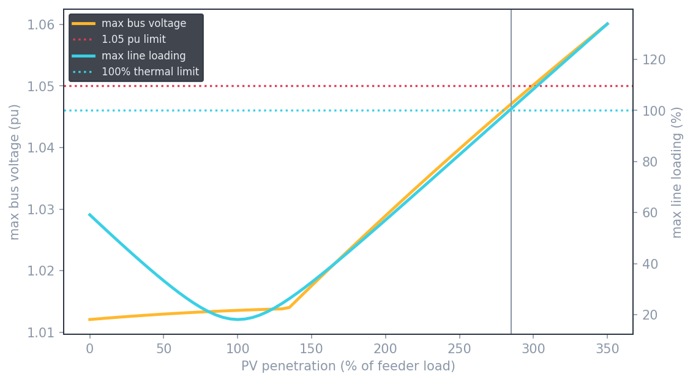
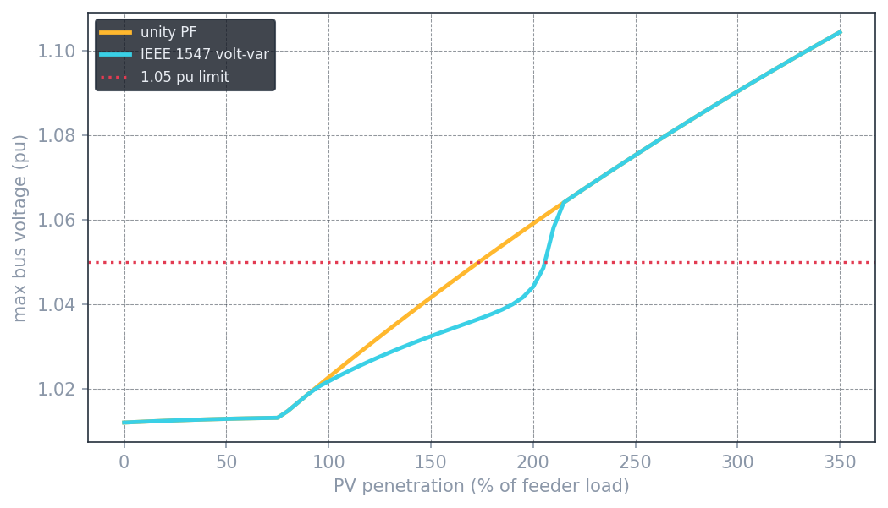

Grid-Connected Solar PV Impact Study
How much rooftop solar a distribution feeder can actually absorb — and what stops it first, voltage or thermal limits. A Python/pandapower hosting-capacity study that sweeps PV penetration to failure and shows how IEEE 1547 smart-inverter control changes the ceiling.
As rooftop solar spreads, every distribution feeder hits a point where it can't take any more — voltage climbs too high somewhere, or the lines carry more backfed power than they're rated for. Finding that ceiling, and knowing which limit you'll hit first, is the core question of interconnection engineering, the single most in-demand skill utilities hire renewables engineers for.
This study builds a feeder from scratch, floods it with increasing solar, and reads off the hosting capacity for four scenarios — two ways of siting the PV, and two inverter behaviors — to answer not just how much fits, but what breaks, and whether smart inverters help.
Picture the feeder as a water pipe running down a street, with houses tapping off it. Voltage is pressure — highest at the substation, dropping with distance as each house draws load. Give the houses solar and each becomes a small pump pushing water back into the pipe; where a house pushes in more than it uses, local pressure rises instead of drops. Enough of that, and the pressure climbs past what the equipment can take.
Formally, the voltage change along a segment is:
When solar pushes real power (P) back toward the substation, that term flips sign and voltage rises. Distribution feeders have a high resistance-to-reactance ratio, so the real-power term dominates — which is exactly why voltage rise from solar is a distribution-level problem, not a transmission one.
A radial 12.47 kV feeder fed from a 138 kV source through a 25 MVA substation transformer: eight 0.5 km line segments (4 km total), with 0.6 MW of load at each of eight buses (4.8 MW total). Solar is added as inverter injections at each bus. With no PV, voltage declines smoothly to 0.980 pu at the far end — comfortably within limits, and a hand calculation of the first segment's drop matched the solver within 1.6%.

- Solve the baseline power flow with no PV as the control case.
- Add PV and sweep penetration (total PV ÷ total load) from 0% to 350%, recording the highest bus voltage and the busiest line at each step.
- Read off hosting capacity — the first penetration that breaks either the 1.05 pu voltage limit or 100% line loading.
- Repeat for two PV placements (spread across every bus vs. concentrated at the feeder end) and two inverter modes (unity power factor vs. IEEE 1547 volt-var).

| PV placement | Inverter | Hosting capacity | What breaks first |
|---|---|---|---|
| Distributed (rooftop) | Unity PF | 13.7 MW | Thermal (lines overload) |
| Distributed (rooftop) | Volt-var | 13.4 MW | Thermal |
| Concentrated (feeder end) | Unity PF | 8.4 MW | Voltage (over 1.05 pu) |
| Concentrated (feeder end) | Volt-var | 9.6 MW | Thermal |
Hosting capacity isn't one number. Spread the solar across the feeder and no single point over-voltages — but all the backfed power piles into the main line near the substation and overloads it, a thermal limit at ~13.7 MW. Put the same solar as one plant at the weak far end and the voltage there spikes long before the lines fill up, a voltage limit at just ~8.4 MW. Same feeder, same total solar, nearly double the capacity depending only on where it sits.

IEEE 1547 volt-var control lets inverters absorb reactive power when local voltage runs high, pulling it back down. On the voltage-limited concentrated case, that bought ~14% more capacity (8.4 → 9.6 MW) and flipped the binding limit to thermal. But on the already thermal-limited distributed feeder, it erased the voltage rise and added no capacity at all — absorbing reactive power just puts more current on lines that were already the bottleneck. You can't reactive-power your way out of overloaded wires.

def volt_var_q(vm, p_mw):
# IEEE 1547-2018 Cat B: absorb reactive power when local voltage is high
S = p_mw / 0.9 # inverter sized with ~10% var headroom
q_max = sqrt(max(S**2 - p_mw**2, 0)) # vars available without exceeding rating
if vm <= 1.02: return 0.0 # deadband — do nothing
if vm >= 1.08: return -q_max # full absorption
return -(vm - 1.02) / 0.06 * q_max # linear ramp betweenThis is a balanced, positive-sequence, single-snapshot simulation study built to demonstrate the hosting-capacity and inverter-control method. It is not a certified interconnection study: it doesn't model phase imbalance, time-of-day PV and load profiles, protection coordination, or utility-specific planning criteria, and the feeder is a representative model rather than a real utility circuit.
This study is the renewables counterpart to the feeder protection work — the same class of distribution feeder, viewed through hosting capacity instead of fault coordination. It also sets up the crown-jewel next step: an IBR protection study, where the inverter-based sources modeled here collide with the overcurrent protection modeled there. That project is where both of my niches meet — the reason to go deep in protection and renewables.
The full annotated notebook — feeder model, baseline check, penetration sweeps for all four scenarios, and the plots — is in the repository.